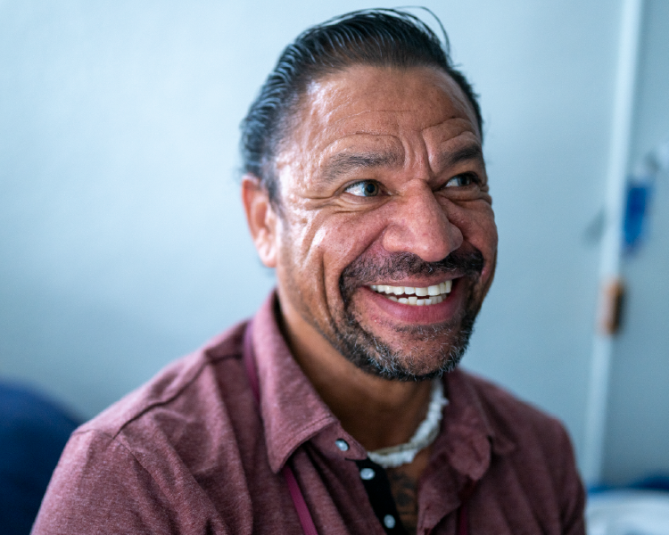
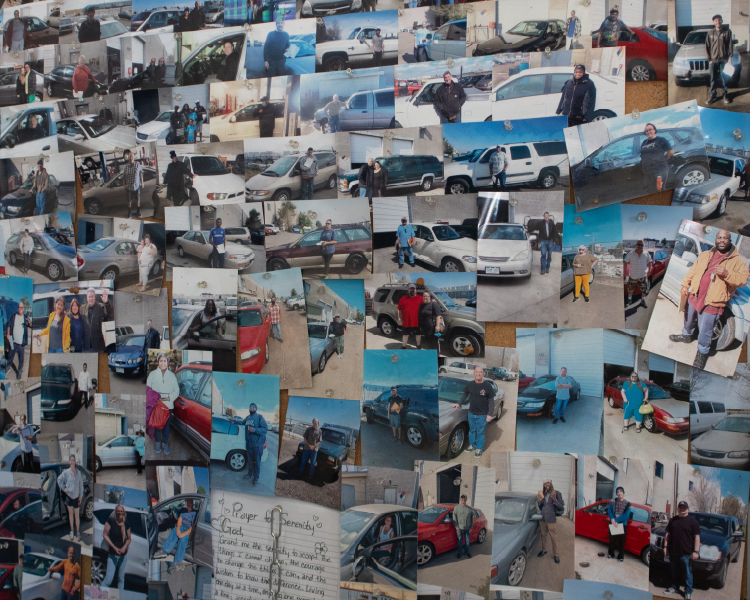
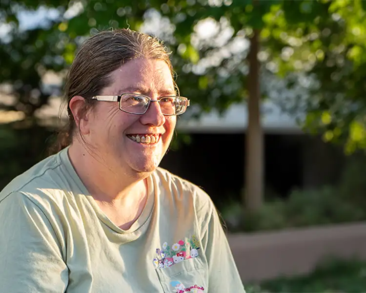
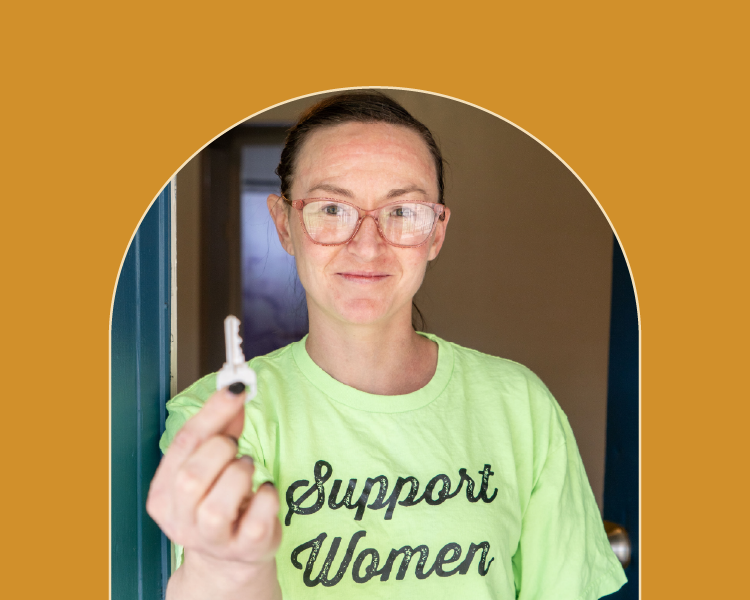
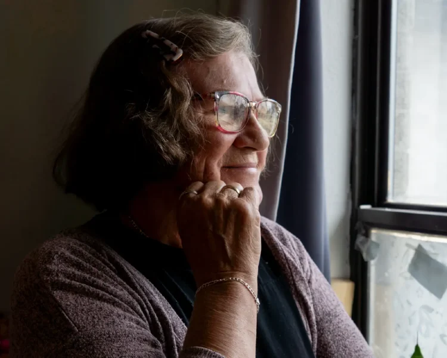
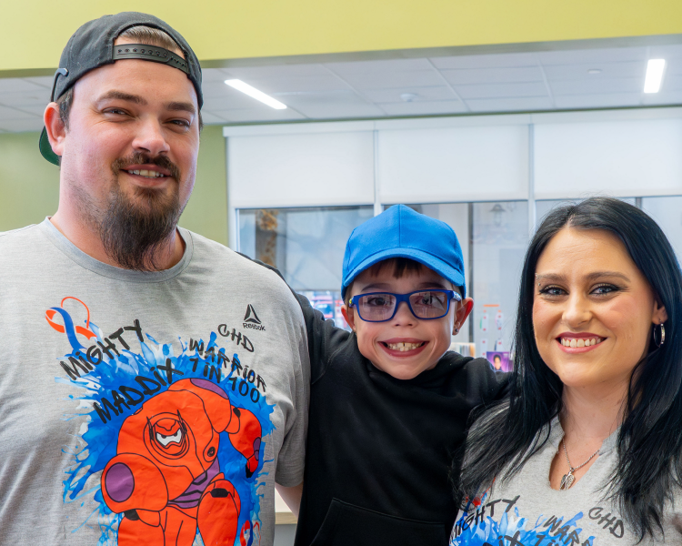
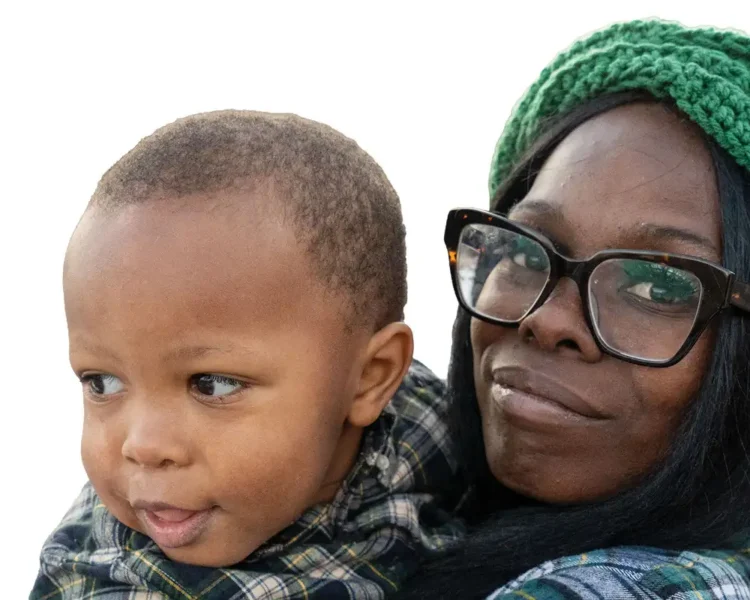
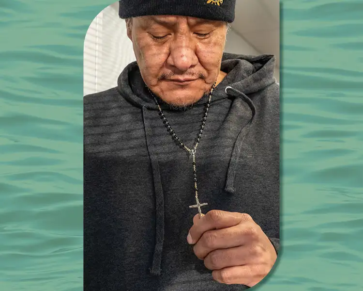
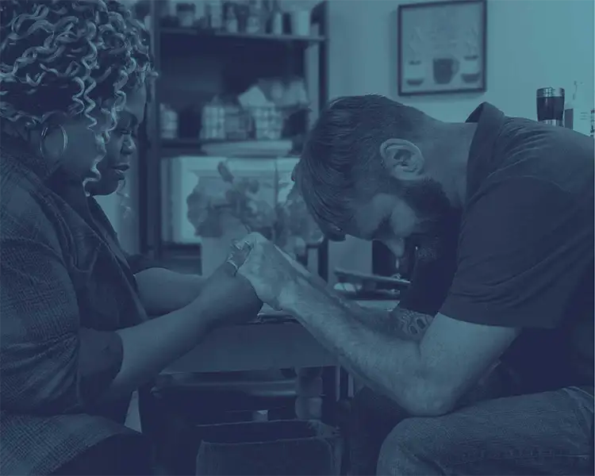

Stories Of Changed Lives
Stories of Changed Lives

Stories of Changed Lives October 1st, 2026Dignity Restored
Abel grew up in a military family, moving from place to place throughout his childhood, including time in Colorado Springs. But as an adult, he found himself stuck in a different kind of cycle—one shaped b... Learn More
Stories of Changed Lives September 1st, 2026The Road to Stability
The road to stability looks different for everyone. For many graduates of the Mission’s programs, reliable transportation provides the freedom, opportunity and confidence to keep moving forward. Learn More
Stories of Changed Lives August 1st, 2026The Hidden Reality of Working Families
After an eviction notice, Kat faced a difficult reality: employment doesn't always guarantee stable housing. But thanks to support from the Bridge program at The Crossing, her family has hope for a more stab... Learn More
Stories of Changed Lives July 1st, 2026Building My Purpose
After 17 years of addiction and instability, Cai slowly rebuilt her life through the support of the Mission’s Bridge program— finding stability, purpose and hope for the first time in years. Learn More
Stories of Changed Lives June 1st, 2026No Longer Invisible
As a deaf woman new to homelessness, Mira felt isolated and unsure where to With support from the Mission’s Complex Case team, she found safety, community and a place to call When Mira first came to Colora... Learn More
Stories of Changed Lives May 1st, 2026Preventing Homelessness, One Family at a Time
This family faced an impossible situation: how to keep their home while fighting for their son’s life. They applied for help from multiple organizations—but repeatedly fell just short. Learn More News May 1st, 2026Letter From Our CEO: May 2026
“Who is getting upstream?” That is the question a room full of homeless service providers was asked several years ago by a major community leader. I took that question to heart. What if we could get upst... Learn More
Stories of Changed Lives April 1st, 2026A Mother's Motivation
Carrying one bag with all of her family's belongings, Keshia faced a future of uncertainty. Thanks to you, they now have a chance to thrive. Keshia arrived in Denver with her three youngest children, determi... Learn More
Stories of Changed Lives March 1st, 2026Easter Renewal
This Easter, you are opening doors to spiritual transformation. For men like Tommy and Kyle—who each came to the Mission in moments of deep desperation—you showed them that a path out of homelessness and... Learn More
Stories of Changed Lives February 1st, 2026